当小分子药物在“不可成药”靶点面前束手无策，当大分子抗体难以穿透细胞膜这道屏障，治疗性肽正以其独特的“中庸之道”闯入新药研发的聚光灯下——它们既有小分子的化学多样性，又保留了大分子的高亲和力与特异性。
然而，肽类药物研发长期处于 “计算盲区” ：传统蛋白质语言模型囿于20种规范氨基酸的桎梏，对非规范修饰束手无策；小分子模型面对长链聚合物又力不从心。直到最近，一批专为复杂肽设计的AI工具相继问世，正在彻底改变这一局面。
从预测到生成，从优化到验证，本文将为您盘点六个正在重塑肽类药物发现前沿的 “破局者”。
核心创新：此研究（发表于 Briefings in Bioinformatics，题为“a large-scale pre-trained peptide representation model for a comprehensive landscape of both canonical and non-canonical amino acids”）提出了一种名为 PepLand 的大规模预训练模型，专门用于处理同时包含规范和非规范氨基酸的肽序列。现有模型在该任务上存在局限：蛋白质语言模型（如ESM2、ProteinBERT）无法有效处理非规范氨基酸，且在短肽上性能受限；小分子模型（如ChemBERTa）则因序列长度不匹配而失效。
关键技术突破：
分子碎片化：提出 AdaFrag 算法，结合基于领域知识的Amiibo操作符与数据驱动的BRICS算法，在原子与完整氨基酸之间找到最优的分子碎片粒度，专为非规范氨基酸设计。
多视图异构图神经网络：同时建模原子视图、连接视图和碎片视图，并通过消息传递机制实现跨视图信息融合。
定制预训练策略：
Fragment Masking：采用碎片掩码替代随机掩码，以更好地适应肽序列中重复的酰胺键结构。
两阶段训练：第一阶段使用约800万条规范肽（源自UniProt）进行预训练，第二阶段使用约9000条含非规范氨基酸的肽（源自CycPeptMPDB和PDB）进行微调，有效解决了非规范数据稀缺的问题。
图池化：采用 GRU池化 方法获取图的全局表示，其性能优于最大池化或平均池化。 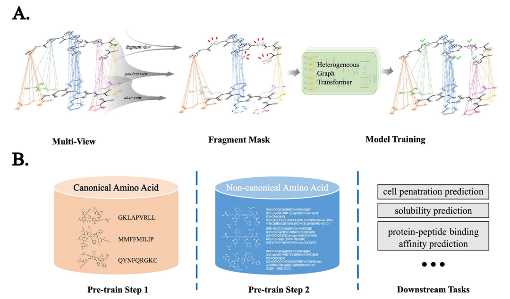
实验结果：
非规范肽任务：在细胞穿透肽和结合亲和力预测任务中，PepLand的斯皮尔曼相关系数显著领先（nc-CPP: 0.628，比第二名高16.5%；nc-Binding: 0.768，比ChemBERTa2高6.5%）。
规范肽任务：在规范肽的CPP、溶解度和结合亲和力预测上，PepLand单独性能已超越Uni-Mol、MolCLR、ChemBERTa2等模型。与ESM2融合后，在c-CPP（AUC 0.885）和c-Sol（AUC 0.73）任务上达到最佳性能。
消融实验：验证了AdaFrag、Fragment Masking、两阶段训练以及多视图融合策略的关键作用。
真实世界泛化：在UniDL4BioPep的ACE抑制、苦味、鲜味肽分类任务中，PepLand+ESM2均优于纯ESM2；在SKEMPI 2.0蛋白-肽结合数据集上也表现优异。 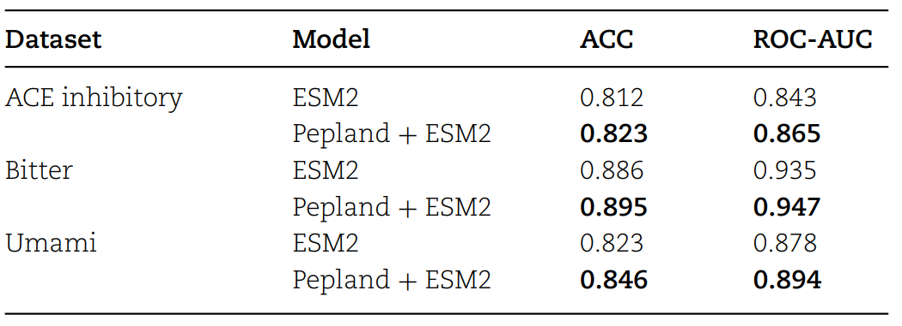
资源：完整代码与数据集已开源。
GitHub：https://github.com/zhangruochi/PepLand
局限性与未来方向：
碎片分词器可能存在未见碎片问题。
非规范肽的训练数据规模仍然较小（<10k）。
GNN模型推理速度较慢（约为ESM2的1/7.4）。
未来工作将致力于扩展训练集、优化分词器，并构建更全面的评测基准。
核心创新：此研究（发表于ICML，题为“De Novo Generation of Therapeutic Peptides with Multi-Objective-Guided Discrete Diffusion”）提出了一个名为 PepTune 的多目标引导离散扩散模型，用于从头生成并优化含有非规范氨基酸和环化修饰的治疗性肽SMILES序列。现有方法各有不足：结构基模型依赖稳定的蛋白质3D结构；仅用20种规范氨基酸的语言模型无法生成化学修饰肽；现有离散扩散模型在多目标优化上面临梯度估计难、数据稀疏和目标冲突等挑战。
关键技术突破：
PepMDLM（无条件生成器）：基于掩码离散语言模型，采用 RoFormer 作为骨干网络，并提出键依赖掩码调度，对肽键的掩码概率更低，优先重建骨架再填充侧链，显著提升了生成肽的有效性。
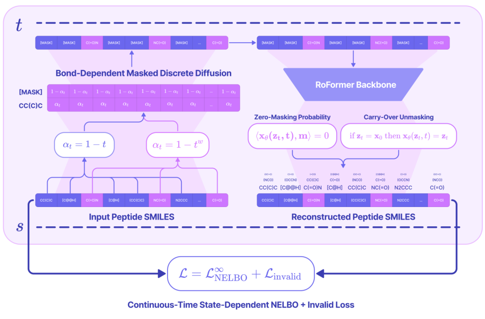
全局序列无效损失：通过argmax操作与softmax缩放，对无法解码为有效肽的无效SMILES序列施加惩罚，将离散的无效信号直接传导至连续概率分布。
蒙特卡洛树引导：提出一种名为 MCTG 的推理时多目标引导算法。它将蒙特卡洛树搜索改造为Pareto最优搜索，无需梯度计算和模型重训，通过在探索与利用间取得平衡，迭代地精炼出Pareto前沿序列。
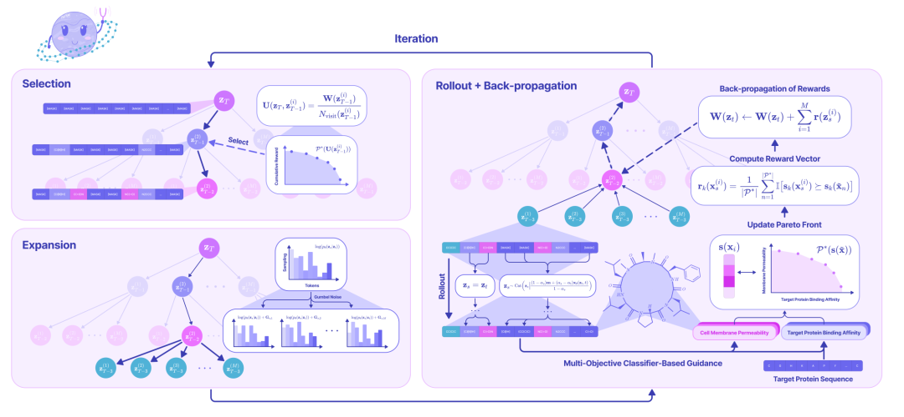
属性预测工具包：专门针对肽SMILES训练了一系列回归/分类模型，结合PeptideCLM嵌入与XGBoost，在溶解度、溶血性、非黏附性、结合亲和力、膜通透性等属性预测上大幅超越PeptideBERT。
实验结果：
生成质量：在最大序列长度200的条件下，PepTune生成序列的有效性、唯一性和多样性均表现优异。MCTG引导仅需20次迭代即可达到100%有效性。
属性预测：在溶解度（F1 0.660）、溶血性（F1 0.846）、非黏附性（F1 0.768）等关键指标上均显著优于PeptideBERT。
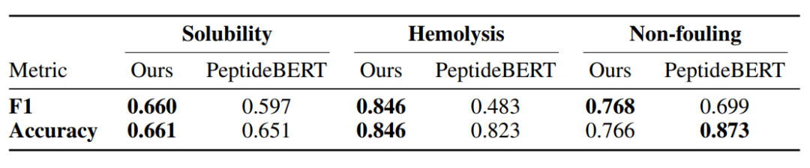
多目标优化：在GLP-1R、TfR+GLAST双靶点等任务中，所有目标属性均随迭代次数同步提升，未出现显著的权衡现象。
实际应用案例：
GLP-1R短链激动剂：生成了远短于司美格鲁肽/利拉鲁肽的激动剂肽，对接分数（-7.4 / -7.0 kcal/mol）优于对照肽（-5.7 / -5.1 kcal/mol），并共享关键极性接触。
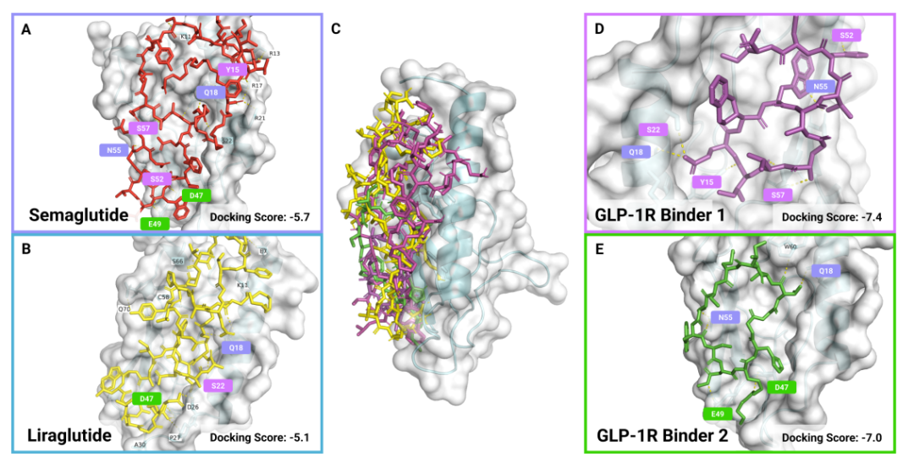
TfR + GLAST双靶点：生成了7个候选肽，对接分数均≤ -7.5 kcal/mol，最高可达-10.5 / -9.2 kcal/mol，且结构多样。
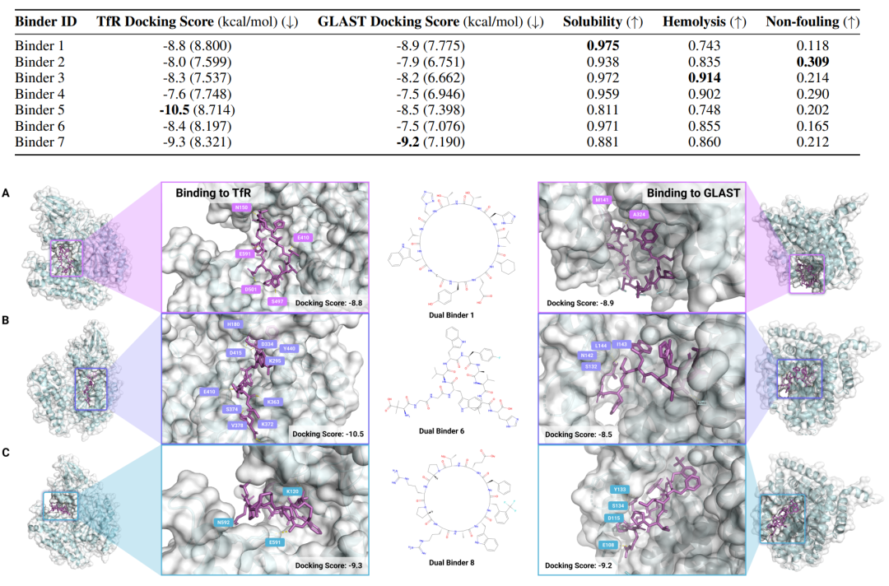
附录额外验证：在TfR、GFAP、NCAM1、AMHR2等多个靶点上，均成功生成高亲和力（< -7 kcal/mol）、高渗透性、结构多样的肽，部分与已知T7肽竞争或共享结合位点。
资源：完整代码与数据集已开源。
Github：https://huggingface.co/ChatterjeeLab/PepTune
SMILES→肽过滤可视化工具：https://huggingface.co/spaces/ChatterjeeLab/SMILES2PEPTIDE
讨论与局限性：
PepTune是首个在离散状态空间中实现多目标引导的直接扩散模型，无需3D结构信息，能处理无序或动态靶点，并可同时优化多种治疗属性。
局限：生成速度受MCTS迭代次数影响；需要更多实验验证其体内活性；存在潜在的误用风险（已在论文中强调伦理监督）。
核心创新：此研究（GPepT: A foundation language model for peptidomimetics incorporating non-canonical amino acids，ChemRxiv预印本，2025）提出了一个名为 GPepT 的基础语言模型，旨在填补现有肽生成模型（如ProtGPT2、PeptideBERT）因仅使用20种规范氨基酸而导致的化学多样性严重受限的空白。引入非规范氨基酸和末端修饰可显著提升肽的药物性质，但缺乏系统化的词汇表阻碍了语言模型的应用。
关键技术突破：
Monomerizer：开发了一个自研Python工具，可将ChEMBL数据库中约240万个生物活性分子的SMILES/化学式分解为规范氨基酸和非规范片段，并自动分类和分配唯一token（ncAAs用X1~Xn，末端修饰用Z1~Zn）。
构建Dataset P：利用Monomerizer构建了一个包含42,743条序列的数据集，其中89.2%的序列含有非规范元素，涵盖11,243种ncAAs和6,465种末端修饰。值得注意的是，63.7%的ncAAs此前未在PubChem/ChEMBL中单独注册。
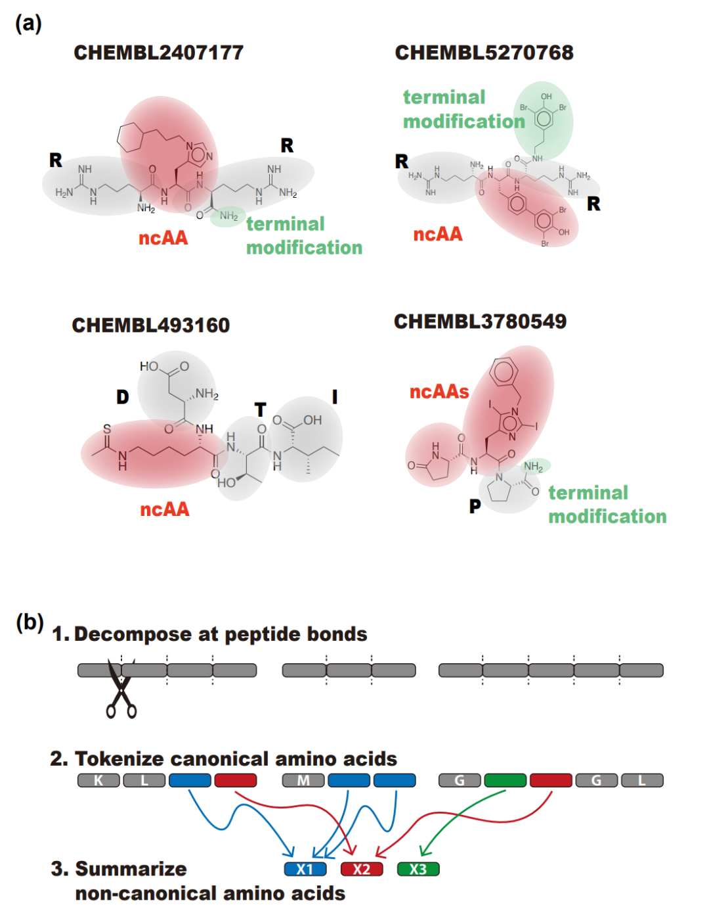
GPepT模型：基于GPT-2 large架构（36层，维度1280），从零开始在Dataset P上进行预训练。同期训练了仅含规范氨基酸的对照模型 GPepT-canonical 以作比较。
实验结果：
无需微调的生成：GPepT无需微调即可生成10,000条有效序列。
多样性提升：t-SNE降维和化学性质分析均显示，GPepT生成序列的结构和化学空间分布远较规范模型分散和广泛。
首次系统性纳入：本研究首次将17,000余种非规范元素系统地纳入语言模型，极大拓展了可探索的化学空间。
实际应用案例：
抗菌肽设计：在205条抗大肠杆菌序列上对GPepT进行微调。
富集分析：生成序列中，与抗菌活性强相关的非规范元素富集分数高达33。
实验验证：筛选并成功合成了5条候选肽之一 Pep1（序列：X556 W X556 W W K Z0，其中X556为D-色氨酸，Z0为酰胺化修饰）。
生物学活性：
抑菌效果：Pep1对大肠杆菌的最小抑菌浓度为50 μg/mL，优于不含D-色氨酸的规范对照肽（MIC > 100 μg/mL）。
构象变化：圆二色谱证实，D-色氨酸的引入诱导了肽的构象变化，解释了其活性提升的原因。
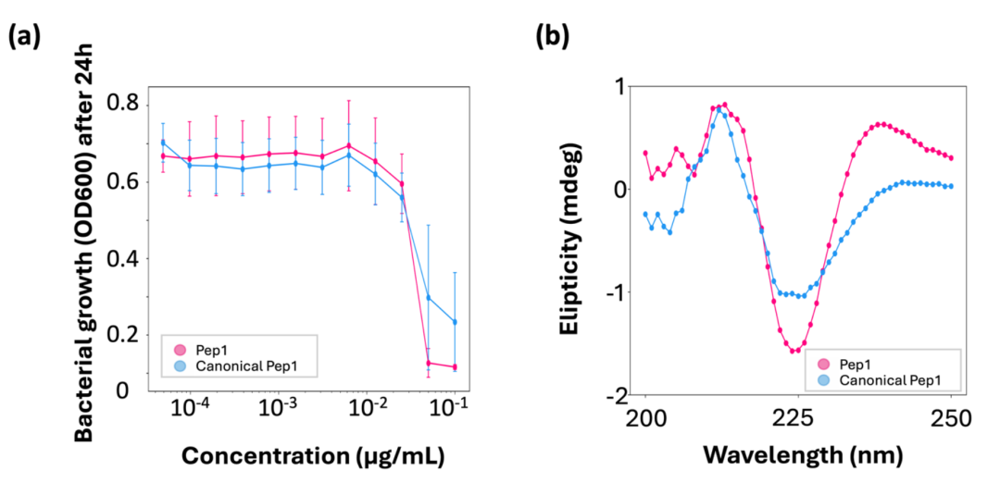
资源（全部开源）：
模型：https://huggingface.co/Playingyoyo/GPepT
Monomerizer代码：https://github.com/tsudalab/Monomerizer
数据：https://zenodo.org/records/14175750
讨论与局限性：
GPepT为抗菌、抗癌、抗炎等领域的肽类药物发现开辟了新范式。
局限：约80%的ncAAs缺乏伯胺基团，无法通过标准固相肽合成法合成。
展望：未来可结合体外核糖体翻译系统或新型合成方法，并随着合成技术的进步，GPepT将极大地加速类药性肽模拟物的开发进程。
核心创新：此研究（HELM-GPT: de novo macrocyclic peptide design using generative pre-trained transformer，发表于 Bioinformatics，2024）提出了 HELM-GPT，一个将大分子分层编辑语言与生成式预训练变换器相结合的大环肽从头生成模型。大环肽是靶向细胞内“不可成药”靶点（如KRAS）的理想药物，但现有设计方法或依赖3D结构，或产生大量不可合成的分子。HELM-GPT通过使用预定义的、可合成的单体集合，确保了生成分子的可合成性，并天然支持非天然氨基酸和环化修饰。
关键技术突破：
HELM表示：采用HELM作为分子表示语言，其词汇表包含3,104种预定义的、可合成的单体（源自ChEMBL、CycPeptMPDB和KRAS专利）。HELM能够简洁且可解释地表示从简单单体到含环化键的复杂聚合物的多层次结构，远优于SMILES。
GPT架构：采用8层Transformer解码器架构，首先在包含22,040条HELM序列的ChEMBL子集上进行预训练，随后在CycPeptMPDB（7,451条）或KRAS相关序列上进行微调。
HELM→SMILES转换器：开发了一个基于RDKit的转换工具，用于将生成的HELM序列转换为SMILES，以便于下游使用标准的分子属性预测工具。
强化学习优化：
结合传统的Reinvent损失与新提出的对比偏好学习损失，通过成对偏好比较显著提升了优化性能。
训练高精度属性预测器（随机森林/XGBoost），对细胞渗透性（Spearman=0.82）和KRAS结合亲和力（Spearman=0.82）进行准确预测。
针对双目标优化难题，提出分步优化策略：先单独优化渗透性，再进行联合优化。该方法产生的能同时满足高渗透性和高亲和力的候选分子数量是直接联合优化的785倍。
实验结果：
生成质量：在Moses指标上，生成序列的有效性高达83.9%-100%，且具有高新颖性和强合成可行性（得益于预定义单体库）。
细胞渗透性优化：结合Reinvent和CPL损失的HELM-GPT在预测渗透性和分子新颖性上，领先或持平于基于SMILES或图的遗传算法/LSTM模型。
KRAS结合亲和力优化：生成的分子对KRAS的预测Kd值显著降低，性能在所有基线中排名第二，但其合成可行性远超表现最好的基线模型。
双目标优化：所提出的分步策略大幅提升了双优分子的生成通过率，成功产生了大量兼具高渗透性和高亲和力的候选大环肽。
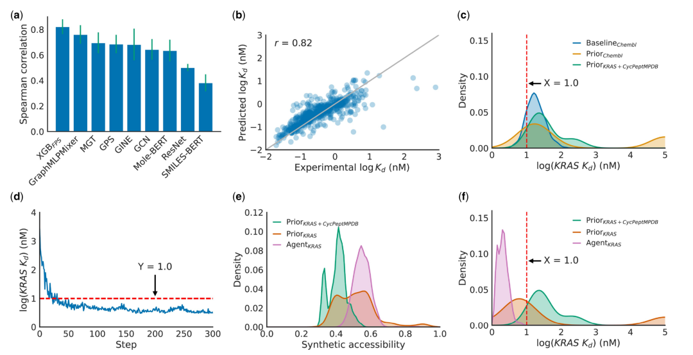
实际应用与意义：
针对KRAS这一关键癌症驱动蛋白，成功生成了大量可同时满足细胞穿透和高亲和力要求的大环肽候选，为靶向“不可成药”靶点的药物设计开辟了新路径。
HELM表示的通用性使其易于扩展至RNA、抗体-药物偶联物等其他大分子的设计任务。
资源：完整代码与数据集已开源。
GitHub：https://github.com/charlesxu90/helm-gpt
局限性与未来方向：
生成分子的化学空间受限于预定义的单体库，未来可随着合成技术的发展进行扩展。
属性预测器的准确性依赖于训练数据的质量和数量。
分步优化策略虽然有效，但其产生的候选分子仍需进一步的湿实验验证。
核心创新：此研究（Scaling SMILES-Based Chemical Language Models for Therapeutic Peptide Engineering，bioRxiv预印本，2026）提出了 PeptideCLM-2 系列模型（参数规模32M~337M），是首个专门为处理含非规范氨基酸、环化、脂化等复杂修饰的肽而设计的SMILES化学语言模型。治疗性肽长期处于“计算盲区”：蛋白质语言模型（如ESM）仅限20种规范氨基酸，而化学语言模型难以处理长链聚合物。PeptideCLM-2通过大规模预训练，直接输入SMILES即可编码任意修饰肽，无需3D结构或自定义特征工程。
关键技术突破：
复合预训练语料库：整合了小分子（PubChem，10.8亿）、肽（ESMAtlas，960万）和脂类（LIPID MAPS，5万）数据，覆盖从小分子到生物聚合物的全化学空间。
k-mer分词器：针对肽SMILES设计，将序列长度压缩64%（小分子压缩38%），在解决长序列自注意力计算瓶颈的同时，保留了完整的化学语义信息。
多目标预训练：探索了三种预训练目标——掩码语言建模、多任务回归到99个RDKit理化描述符，以及双目标联合训练。
Transformer编码器架构：采用BERT式编码器，结合RoPE旋转位置编码、SwiGLU激活函数和Pre-LN层归一化，支持端到端处理包含环化、非规范残基、PEG化等修饰的原始SMILES。
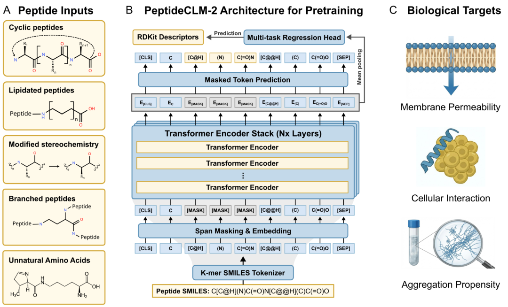
实验结果：
嵌入空间自组织：337M参数的纯MLM模型在无监督条件下，其嵌入空间即可按分子量、芳香性、logP、渗透性等理化性质自动聚类。
缩放规律发现：小模型（32M）需要显式的理化监督才能获得良好的预测性能；而大模型（337M）通过纯MLM即可自发习得理化先验，性能与有监督模型持平（如渗透性预测R²≈0.58）。
下游任务全面领先：
膜渗透性：R²=0.58，显著优于分子指纹基线（0.3）和专用模型。
肿瘤归巢肽：MCC=0.732，超越现有最佳基线（0.71）。
细胞穿透肽（含化学修饰）：MCC=0.875，优于PaDEL描述符基线。
抗菌活性（含ncAA）：MCC=0.813，超越复杂图模型AmpHGT（0.797）。
聚集倾向预测：AUROC从32M模型的0.694提升至337M模型的0.823，而分子指纹基线仅0.579。
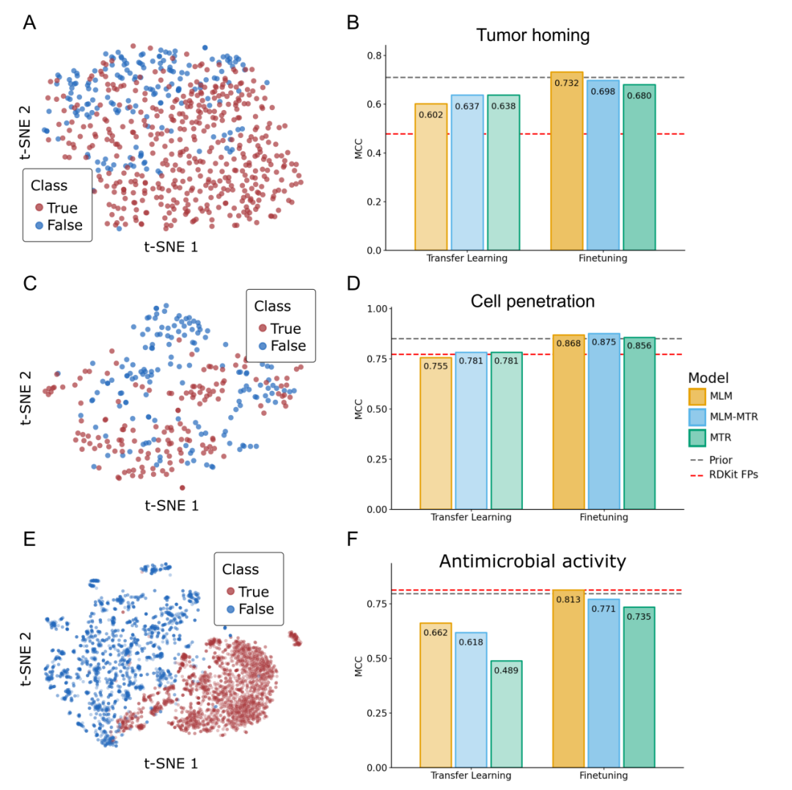
实际应用价值：
PeptideCLM-2直接以SMILES为输入，即可为任意化学修饰的肽生成富含理化信息的嵌入表示，适用于从头设计、高通量筛选、聚集倾向评估等关键环节。其在非规范化学空间上的强大泛化能力，使其成为连接小分子化学空间与生物功能预测的重要桥梁。
资源（全部开源）：
模型权重与代码集合：https://huggingface.co/collections/AaronFeller/PeptideCLM-2
GitHub：https://github.com/AaronFeller/PeptideCLM-2
预训练数据：Zenodo (doi:10.5281/zenodo.17993164)
讨论与局限性：
优势：当参数规模达到亿级时，纯语言建模即可自发学习化学规律；k-mer分词器高效处理长链序列。
局限：静态SMILES表示未显式建模分子的动态构象；聚集倾向预测仍依赖实验数据。
未来方向：扩展至十亿参数规模；与扩散模型结合实现多目标引导的从头生成。
核心创新：此研究（Computational Site Saturation Mutagenesis of Canonical and Non-Canonical Amino Acids to Probe Protein-Peptide Interactions，发表于 Frontiers in Molecular Biosciences，2022）针对RaPID等技术快速发展带来的非规范氨基酸肽计算需求，开发了两项关键工具：AutoRotLib（自动化参数生成工具）和硫醚环化建模协议。现有Rosetta工具难以快速参数化NCAAs并设计硫醚环化大环肽，限制了含NCAAs肽的亲和力成熟与药代动力学优化的计算辅助。
关键技术突破：
AutoRotLib：全自动参数化工具，仅需输入SMILES字符串和侧链总电荷，即可为含≤4个重原子扭转角的NCAAs、N-甲基氨基酸、肽类生成完整的Rosetta参数文件。与经典MakeRotLib和Dunbrack库相比，AutoRotLib在蛋白-蛋白界面侧链重打包测试中表现相当或更优。
硫醚环化建模协议：新增Rosetta patch文件和扭转角约束，支持对N端乙酰基与下游Cys侧链形成的硫醚环进行精确建模，专为RaPID平台发现的大环肽设计。
量子力学验证：选取6个代表性NCAAs，在α-螺旋和β-折叠骨架构象下使用B3LYP-D3BJ方法进行能量计算，验证了AutoRotLib生成的旋转库与QM计算结果高度一致。
计算位点饱和突变扫描：建立自动化流程，对靶点-肽复合物结构的每个残基位置，逐一替换为20种规范氨基酸和15种已参数化的NCAAs，使用Rosetta FastDesign和ddg mover计算结合自由能变化，实现化学空间的大规模快速探索。
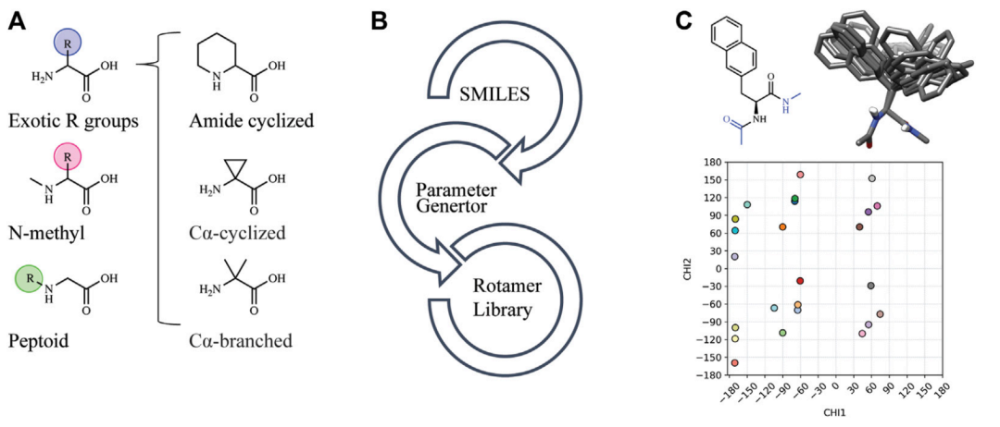
实验结果：
线性肽验证：以NMR结构为模型，每位点突变预测与实验数据的一致性达16.7-97.2%。规范氨基酸的预测一致性高于NCAAs；溶剂暴露位点的预测准确度高，适用于药代性质优化的位点筛选。
硫醚大环肽验证：以晶体结构为模型，每位点突变预测与实验数据一致性达17-94%，其中7/12个位点一致性超过50%。引入RMSD过滤后可剔除183个不合理的构象，显著提升预测可靠性。
化学空间扩展优势：单次计算扫描即可评估远超体外实验筛选能力的化学空间（15+种NCAAs × 每个位点），极大加速亲和力成熟和药代优化进程。
实际应用价值：
AutoRotLib大幅降低了非规范氨基酸的Rosetta参数化门槛，使计算化学家能够快速将新型NCAAs纳入设计流程。
硫醚环化协议填补了RaPID平台来源的大环肽的计算建模空白。
计算饱和突变扫描可有效指导体外库设计，减少实验轮次，实现 “计算预筛+实验验证” 的高效闭环优化。
资源（开源）：
AutoRotLib：https://github.com/rpavlovicz/AutoRotLib
讨论与局限性：
优势：为含NCAAs的肽药物优化提供了急需的计算工具；可系统性评估远超实验能力的化学空间；与RaPID等实验平台形成良好互补。
局限：NCAAs的骨架Ramachandran空间采样仍不完善；Rosetta参考能量和打分函数对大侧链或大环构象变化敏感，易产生假阳性/假阴性结果；目前仅支持≤4个扭转角的NCAAs，且不能在不同氨基酸类别间互换。
未来方向：结合分子动力学模拟、开发新一代打分函数、校正参考能量，以及与RaPID等实验平台形成闭环迭代，实现更高效的肽类药物优化。
从PepLand的精准表达到PepTune的多目标生成，从GPepT的化学空间拓展到HELM-GPT的大环设计，从PeptideCLM-2的规模定律到AutoRotLib的参数化突破——这六款工具各有所长，又相互补充，共同勾勒出AI赋能肽类药物研发的完整拼图。
它们证明了：当AI遇见肽，不仅是方法的革新，更是可能性的爆炸。 曾经被视作“不可成药”的靶点，如今有了新的解题思路；曾经受限于20种氨基酸的化学空间，如今扩展至数万种非规范元素；曾经需要数月甚至数年的筛选优化，如今可在数日内完成计算预筛。
当然，这些工具并非终点。它们各自面临着数据稀缺、计算速度、合成可行性等现实挑战。但正如GPepT用湿实验验证了首个AI生成的活性肽模拟物所昭示的——当计算预测与实验验证形成闭环，当AI模型与合成技术同步进化，肽类药物的黄金时代或许正在加速到来。
在这个AI与生命科学深度融合的新纪元，这些“破局者”正在书写着属于自己的篇章，而它们的读者，将是未来千千万万受益于新型肽类药物的患者。